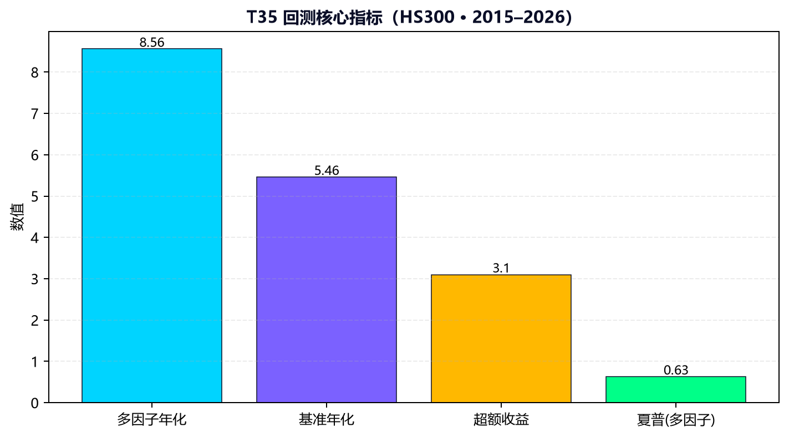
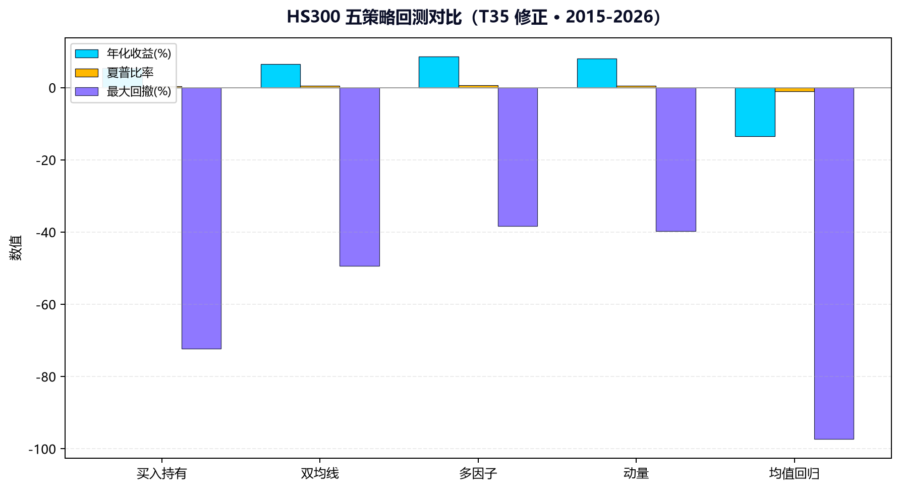

AI 驱动的另类数据量化投研平台
AFAC2026 金融智能创新大赛 · 初创组 · 项目编号 2026FINTECH-FINT-0093
AFAC 平台 ID 20260110040 · Demo https://3blue1brownlab.cn
永字资管战略合作已签署QuantInsight Pro 面向专业机构投资者，将 SHAP 可解释性深度集成到 A 股智能选股流程，整合另类数据、AI 投研智能体与 MIT 开源回测引擎，提供数据 + 模型 + 策略 + 合规的一站式智能投研解决方案。生产 Demo 已公网部署，推荐单位杭州永字资产管理有限公司战略合作已签署。
| 角色 | 姓名 | 背景 | 职责 |
|---|---|---|---|
| CEO / 主讲 | 冯亦根 | 浙江大学计算机通信工程本科、亚洲城市大学硕士；慧点资本创始人，CFA；15+ 年金融科技投资经验。 | 战略、融资、BD、路演总负责 |
| CTO | 王宇寒 | 杭州电子科技大学软件工程专业 2022 级本科；平台架构与 AI 工程负责人。 | 技术架构、AI 模型、系统开发、生产部署 |
| 产品 / 数据 | 官馨 | 陕西师范大学人工智能专业大三；产品设计与客户研究。 | 数据策略、产品设计、客户研究、UX |
| AI / 量化 | 梁理智 | 河北科技大学；翼支付 AI 开发者，金融科技师（二级）证书。 | 量化策略、AI 金融科技落地、运营 |
推荐单位顾问：薛永再（杭州永字资管法定代表人，场外非参赛队员）
| # | 模块 | 能力 | 状态 |
|---|---|---|---|
| 1 | 智能选股 | 17 因子综合评分 + Top10 推荐 | ✅ 已上线 |
| 2 | SHAP 解读 | 4 类 SHAP 图 + 17 因子归因 | ✅ 业内独家 |
| 3 | AI 投研问答 | RAG 数据接地 + Qwen 解读 + 引用溯源 | ✅ 已上线 |
| 4 | 量化策略回测 | 5 策略 + 11.4 年 HS300 真实数据 | ✅ 开源引擎 |
| 5 | 智能盯盘 | 7×24 涨跌停预警 + 异动监控 | ✅ 已上线 |
| 6 | 模拟交易 | A 股实时模拟 + 3 层 fallback | ✅ 已上线 |
| 7 | 自动报告 | 6 段式周报 + Word/PDF 导出 | ✅ 已上线 |
| 8 | 实时数据看板 | 大盘卡片 + 北向资金热力图 | ✅ V2 已上线 |
| 指标 | 数值 |
|---|---|
| 多因子年化收益 | 8.56% |
| 夏普比率 | 0.63 |
| 最大回撤 | -38.33% |
| 单元测试 | 21/21 PASS |
| 永字资管 | 战略合作已签署 |
| AFAC 自评 | 88 / 100 |


| 在线 Demo | https://3blue1brownlab.cn |
| 提交 ZIP | submission/QuantInsight_Pro_AFAC2026_提交包_20260708.zip |
| 文档归档 | archive/legacy_v1/（V1 过时材料） |
| 权威 BP | submission/01_商业计划书_QuantInsight_Pro.md |
| 路径 | 说明 |
|---|---|
01_商业计划书_QuantInsight_Pro.md/.html | AFAC 八章节商业计划书（权威） |
02_Demo交付/ | Demo 视频、运行指南、POC 数据、交互设计 |
03_正式文档_WORD/ | 9 份正式 Word 文档（规则对照、测试、FAQ 等） |
04_测试报告/ | 单元测试与冒烟测试 JSON |
05_团队信息一致性核查报告.md | 团队口径审计报告 |
06_文档归档说明.md | V1 文档归档与 README 位置说明 |
00_项目README_QuantInsight_Pro.docx/.html | 本文件 — 项目一页纸总览 |
QuantInsight_Pro_AFAC2026_提交包_*.zip | 一键打包提交 ZIP |